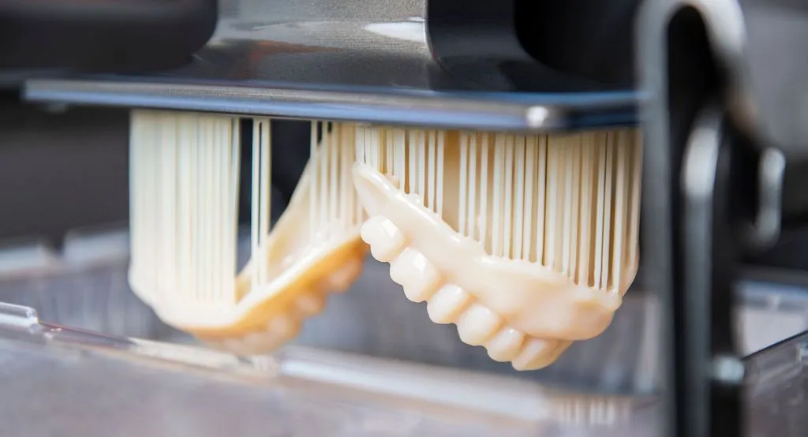
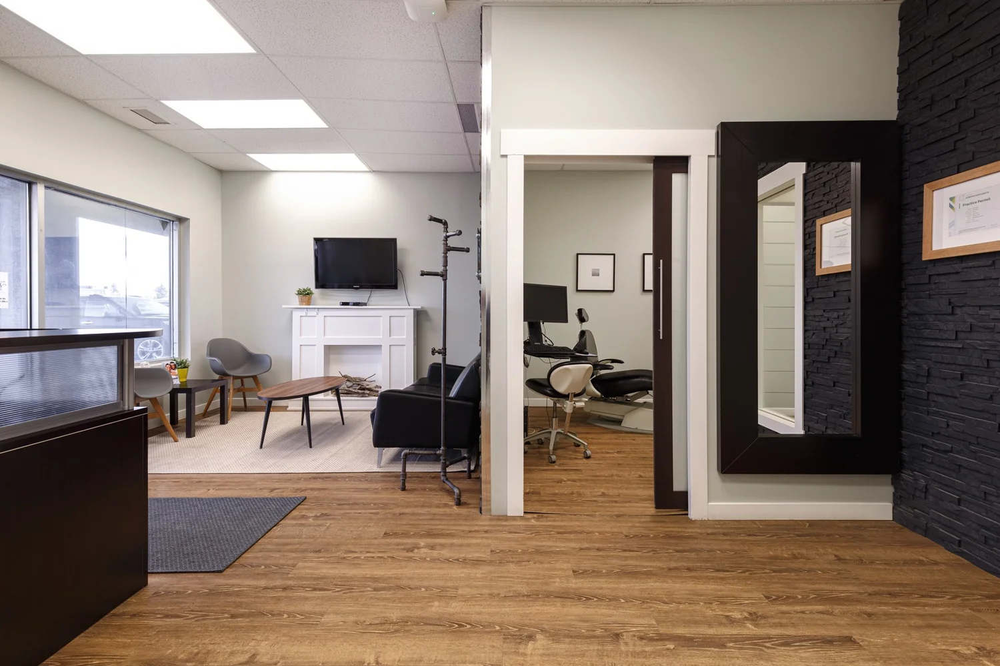
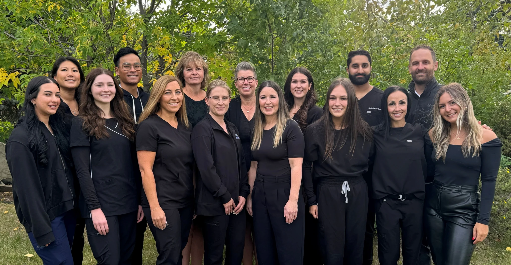

Case Studies
Real clinics, real results.
Dental clinics across Canada that handed us their marketing. We ran the ads, called the leads and booked the patients. Here is what came back.
DMC is the first marketing that’s actually paid off since I opened in 2012.
$161,000 in revenue from a $13,000 ad spend

$72,000 in revenue from a $6,000 ad spend
We’ve opened up another operatory just to deal with the overflow of new patients.

$255,000 in revenue from a $19,000 ad spend

$92,000 in revenue from a $6,000 ad spend
Individual campaign examples. Results vary by clinic, market, and treatment offering.